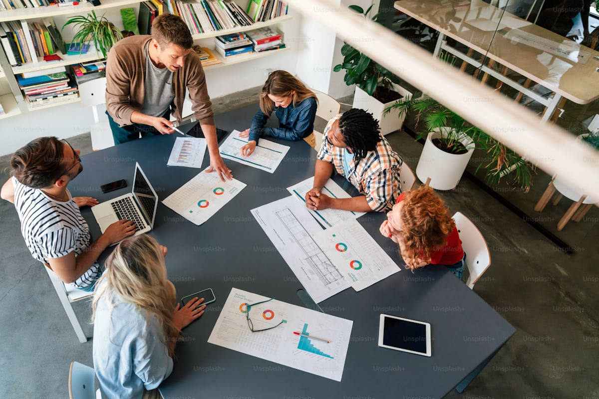

The people behind AFANA
AFANA is built by a small, growing team who believe animal welfare and community welfare go hand in hand. Click any photo to learn more.
Meet the team
AFANA Animal Futures was co-founded in Nigeria, and has since grown to include researchers and operational support. Together, the team brings complementary expertise across research, community engagement, and animal welfare practice.
"We started AFANA because we kept seeing the same story: animals suffering, farmers struggling, and communities left out of decisions that affect them all. We believe there's a better way, one grounded in evidence, and built with the people closest to the problem."— Farhan & Kaosarah, Co-Founders
We're building our team
AFANA is a young and growing organisation. As our work expands, so will our team. If you have expertise in animal welfare, research, communications, or community engagement, and a passion for creating change in Nigeria, we'd love to hear from you.
We also work with advisors, volunteers, and partner organisations who bring complementary skills and perspectives to our work.
Get in Touch